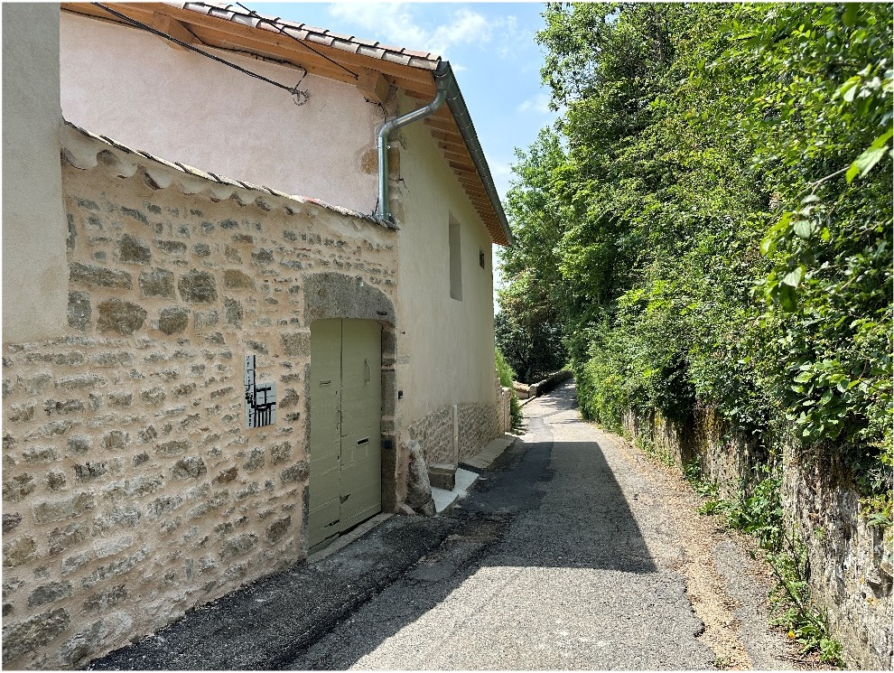

Expertise
Charpente couverture & zinguerie
Ranc & Genevois Construction réalise des travaux de réfection de toiture, couverture, zinguerie et rénovation d'ouvrages existants.


Couverture et zinguerie
Ranc & Genevois Construction réalise des travaux de réfection de toiture, de couverture et de zinguerie sur des bâtiments anciens comme récents. L'entreprise intervient sur tous types de couvertures : tuiles canal, tuiles mécaniques, ardoises, ainsi que sur les ouvrages de zinguerie associés — noues, chéneaux, gouttières, solins et couvertines.
Chaque chantier débute par une inspection complète de la couverture existante, permettant d'identifier les zones de fragilité, les infiltrations et les défauts d'étanchéité. Un diagnostic précis est établi avant toute intervention afin de proposer la solution la mieux adaptée à l'ouvrage et au budget.
La zinguerie est un savoir-faire à part entière, maîtrisé par les équipes de l'entreprise : façonnage sur mesure, raccords étanches, habillage des souches de cheminée et traitement des points singuliers. Chaque détail est soigné pour garantir la durabilité de l'ouvrage dans le temps.
Voir les réalisationsTexte détaillé
Présentation complémentaire
La réfection complète d'une toiture implique la dépose de l'ancienne couverture, le traitement ou le remplacement des éléments de charpente défaillants, la pose d'un écran sous-toiture, puis la repose ou le remplacement des tuiles ou ardoises. Ranc & Genevois Construction coordonne l'ensemble de ces phases avec ses propres équipes.
L'entreprise intervient aussi sur des chantiers de rénovation partielle : remplacement de tuiles cassées ou déplacées, reprise de faîtages, réfection localisée de zinguerie ou traitement de fuites ponctuelles. La réactivité et la qualité d'exécution sont les mêmes quelle que soit l'échelle du chantier.
Implantée à La Mulatière, l'entreprise intervient sur Lyon et l'ensemble de sa première couronne pour tous types de travaux de couverture et de zinguerie, en rénovation comme en neuf.
Particuliers, syndics, architectes et maîtres d'œuvre peuvent faire appel à Ranc & Genevois Construction pour une expertise technique, un chiffrage ou la prise en charge complète de leur chantier de toiture.